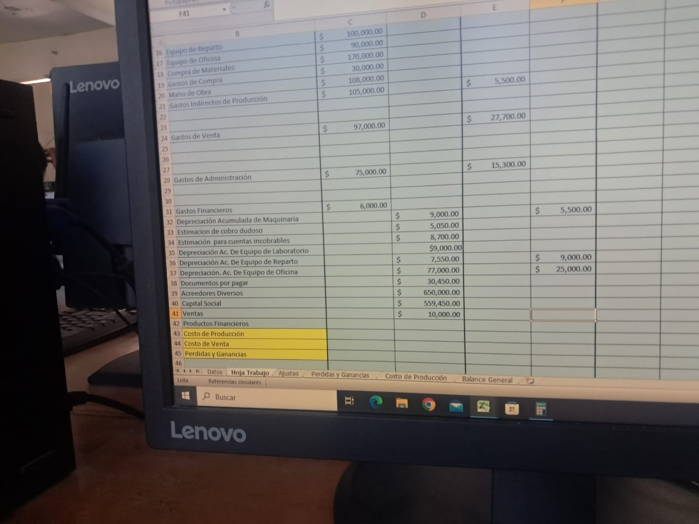

La especialidad de contabilidad enseña los principios básicos del manejo financiero y administrativo. Los alumnos aprenden a realizar registros contables, preparar estados financieros, y utilizar herramientas tecnológicas como hojas de cálculo para simular situaciones reales del entorno empresarial.
